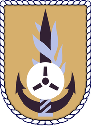
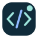

Security & systems experience
SecOps Engineer & Python Developer
Operated SentinelOne, CrowdStrike and Cisco security platforms. Built a full-stack automation and analytics solution for IT and InfoSec teams, improving network visibility, performance tracking and security compliance. Used Python, Flask, pandas, seaborn and SQLite; deployed on Azure Web Jobs.
Ramat Gan, IsraelEDR · Cisco · Python · Azure
SecOps Engineer
Operated network and application security systems. Built Python and PowerShell automations and worked with F5 ASM, Check Point, Forescout and FireGlass.
Netanya, IsraelPython · PowerShell · WAF · NAC

Israeli Navy · Mamtam
SecOps / SOC
Monitoring, incident response and forensics in a 24/7 SOC. Hands-on memory and disk analysis, endpoint investigation, network IDS and reverse engineering. Developed security tools with C#, Python and PowerShell.
Ramat Gan, IsraelSOC · Incident response · R&D
Software development & studies

Independent development & studies
Independent Developer
Designed, developed and deployed Tzav Rishon. Built academic tools with Python and explored basic machine learning alongside my studies.
Tel Aviv, IsraelReact · Node.js · Firebase · Python
Full-stack Developer
Built enterprise SaaS features with React, Ember, Node.js, Redis and MySQL in an AWS microservice architecture. Worked with Docker, CI/CD and Agile/Scrum delivery.
Tel Aviv, IsraelReact · Ember · Node.js · AWS